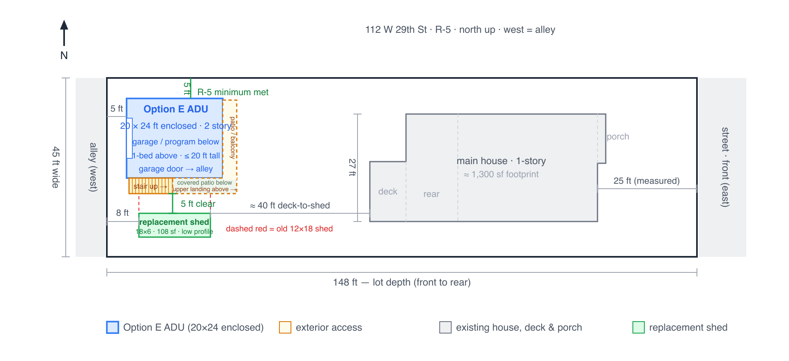
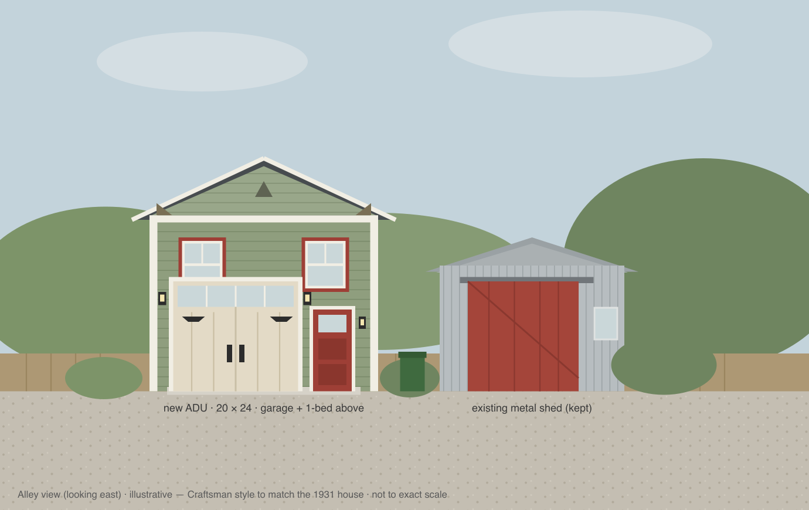

Project at a glance
480 sf above a garage,
under a 20 ft ridge.
Three drawings tell the current story. Open any one for a full-size view.

Option E site plan
20 × 24 ft enclosed footprint with 5-ft north setback, south stair, covered south patio, stacked east patios, and an 18 × 6 replacement shed.

Alley-side rendering
Working massing and Craftsman character; openings still follow final plan.

Primary layout · Option E
South alley stair and wraparound landing create a covered patio below and connect directly to the upper east patio and sliding-glass entry.
Draft 01 · Starting point
Option E ADU with alley stair and stacked east patios.
Two-story, 20 × 24 ft enclosed structure at the 5-ft north setback. Garage, bath, office, and sunroom below; one-bedroom apartment above. A new low-profile 18 × 6 maximum shed envelope sits on the southern 5-ft setback, leaving 5 ft clear before the exterior stair.
North setback Current draft uses the full 5-ft R-5 setback; no north-side variance is assumed.
Replacement shed Remove the current 12 × 18 structure; rebuild as a low-profile 18 × 6 shed on the southern 5-ft setback with 5 ft clear to the stair.
Owner measurements and public records only. Preliminary — not for permitting or construction.
Plans under consideration
Five ways to organize the same small envelope.
Option E is the primary design basis. It translates the owner's two-level sketch, corrects the kitchen for the roof, and keeps the south alley stair. Architect should test it, not preserve it literally.


{kind=link}
Design direction
Simple, warm, and compatible with the 1931 house.
Olive or muted green lap siding, a legible roof, generous eaves, divided-light windows, warm accents, and a carriage-style garage door. Craftsman influence without imitation.


Downloadable working set
Everything needed to start.
CAD and model files are true-scale working references. PDFs and public records provide markup context and traceability.